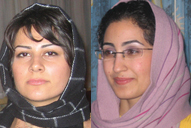
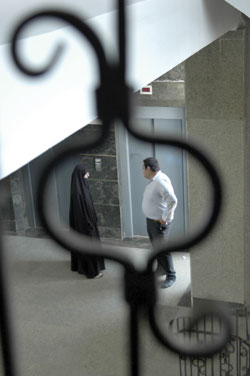
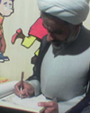
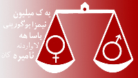
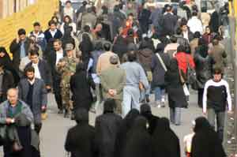
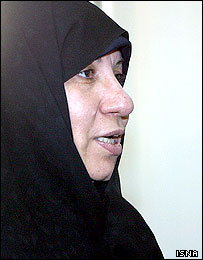

مقالههاى اين بخش
- 17 شهریور 1386

- 14 شهریور 1386
- 13 شهریور 1386
- 12 شهریور 1386

- 12 شهریور 1386

- 10 شهریور 1386
- 8 شهریور 1386
- 7 شهریور 1386

- 7 شهریور 1386

- 31 مرداد 1386

اعتماد- مريم حسين خواه
- 29 مرداد 1386
- 29 مرداد 1386

اعتماد
- 27 مرداد 1386

- 21 مرداد 1386
- 19 مرداد 1386

- 18 مرداد 1386
- 16 مرداد 1386
- 14 مرداد 1386
- 12 مرداد 1386
- 30 تیر 1386

- 28 تیر 1386
- 23 تیر 1386

- 20 تیر 1386

- 19 تیر 1386

- 18 تیر 1386

- 17 تیر 1386
- 16 تیر 1386

- 14 تیر 1386

- 12 تیر 1386

- 11 تیر 1386
| ... | | | | | | | 5460 | | |